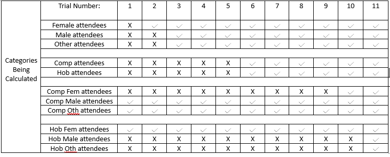
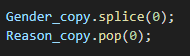
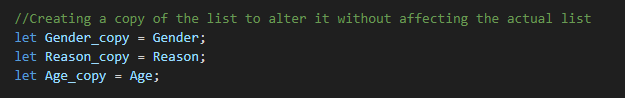
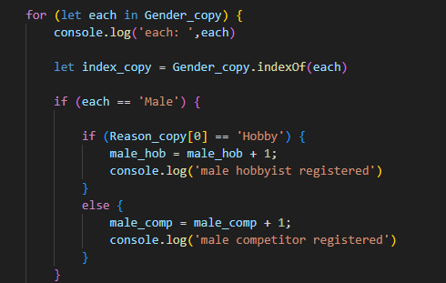
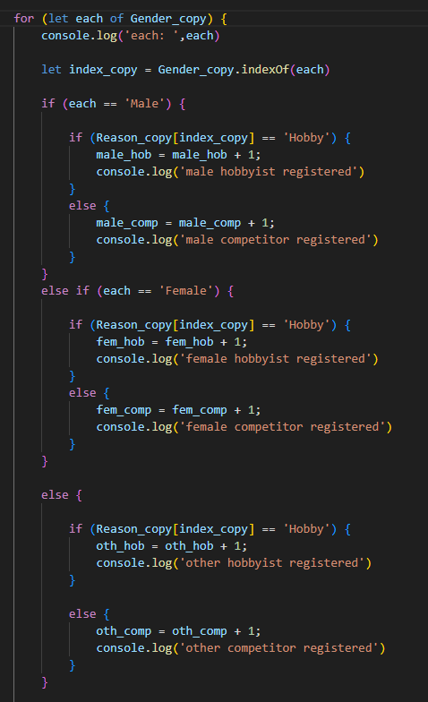

Week 1-2 I reviewed the links in the brief and chose the main target audience I wanted to appeal to: Gamers.
I researched websites to help me identify how I could design and lay out my own website. I researched
datasets and found one I that would suit my needs .
Week 3- 4 I started cleaning my data and uploaded the clean information to Firebase. I started work on the
analysis of my data for graphing and storing this data onto Firebase.
Week 5 -6 I continued with the analysis of my data. I have had issues with this mainly due to the size of my
dataset and the fact it is causing my computer to crash
Week 7 -8 I worked on my basic graphs and started work on my website. I have made progress with my analysis
but not all the graphs are currently working.
Week 8-9 I successfully finished and uploaded the analysis for two of my graphs and uploaded the additional
dictionaries created from my analysis onto firebase to make my graphs. I created my main website page and
using the data from my analysis, successfully constructed two functional graphs.
Week 10 – 11: I have given up on my third graph idea due to time constraints and issues with analysing the
data. I constructed a user survey and successfully logged the survey results onto firebase for analytical
purposes. I also began working on my reccomendations and made both my graphs interactive using short from
tags that received an input to shorten or lengthen the display
Week 12: I finished my recommendations and cleaned up my code. I made my video and finished my write up in
the HTML file.
The above table displays an error I faced while creating my code for the calculated average results in my
survey. To the left, I have the different categories and the expected results. To the right, I have a
screenshot of the returned results I was receiving instead. The survey had an even amount of participants
with only three empty categories. Instead, the results returned eight empty categories and incorrect results
in the counted categories. NOTE: All percentages are rounded for better visualisation.
It took two attempt to fix the gender percentages, five tries to fix the hobbyist and competitive
percentages, and eleven total trial to fix the entire code. A table of the trials is below:

Note: The age averages are not included in the above tables because they had no error.
Notable problem
While writting my code for the more specific categories of averages (eg: male competitive attendees), I
tried making the process easier for myself by copying the lists and altering that copy each time the code
ran:


This allowed my code to look like this:

This code itters through the copy of the given list and using boolean logic, it narrows down the possible
demographic being represented and adds one value to the counter of that demographic. This counter is then
used in a function calculating the mean average and turning it into a rounded percentage before it's logged
onto firebase for survey analytics. I believed by making a copy of the list and narrowing down that copy as
I went with slice and pop would make the process of coding up this algorithm easier since I'd only have to
reffer to the first value of the list every time however this proved to just slow me down and break my
results.
I also notably made an error in my code when I wrote 'for (let each in [list])' instead of 'for (let each of
[list])'.
The 'for...in' loop is designed to iterate over the indices or keys of an object or array, rather than the
actual values themselves. As a result, my code was referencing the index positions of the elements in the
array, not the values contained within the array. This caused the logic to break, as I was expecting to
access the actual elements of the array, but instead was working with their indices. Therefore, my code
wasn't functioning as intended and failed to run properly. The correct approach in this case was to use 'for
(let each of [list])', which allows the loop to iterate over the values in the array directly, giving me the
expected results.
This is the fixed code:

By letting index_copy = the index of the item being examined by the code, I removed the need for the splice
and pop command in my code, which made it run much smoother as soon as the change was made. Since much of
the code for the demographic sorting is the same in nature, it was then just a matter of copying the same
correct code to the other areas of interest and altering it to suit the situation. Once my code was
finished, I verified all included percentages and the code ran very smoothly, returning correct values. I
didn't remove the usage of list copies from my code since keeping them didn't affect the code in any major
way and it was not a priority to me as long as the code was running smoothly and returning the correct
results, which it evidently was.